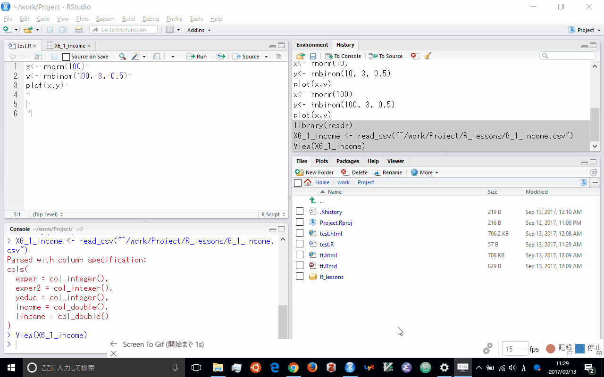
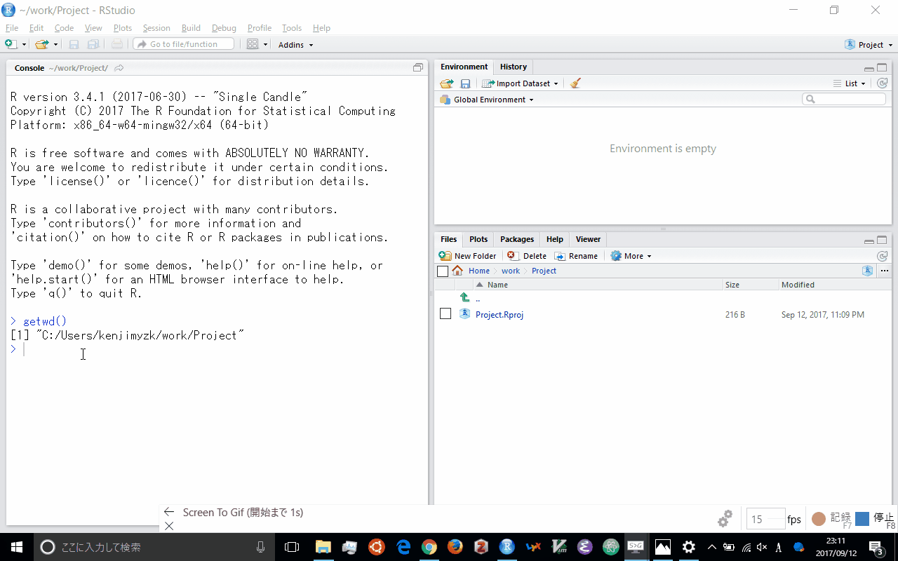

5 データ入力
library(tidyverse)5.1 はじめに
R においてデータ分析をおこなうには データ入力する必要がある. データについてがR やパッケージに入っている場合があるが, 多くは外部ファイルを取り込むことになる. 読み込まれたデータはRではデータフレイム (dataframe) となる.
データフレイムは同じ長さのベクトルを組み合わせたリストのことである. 例えばデータフレイムは次のようにして作られる.
df <- data.frame(x = rnorm(10), y = letters[1:10])
str(df)
## 'data.frame': 10 obs. of 2 variables:
## $ x: num 2.929 0.196 1.247 -1.457 -0.944 ...
## $ y: Factor w/ 10 levels "a","b","c","d",..: 1 2 3 4 5 6 7 8 9 10ただデータフレイムは自動的に文字列が因子ベクトルに変換されてしまう. これを避けるには次のように stringsAsFactors= FALSE をつける.
df <- data.frame(x = rnorm(10), y = letters[1:10], stringsAsFactors= FALSE)
str(df)
## 'data.frame': 10 obs. of 2 variables:
## $ x: num -0.1168 0.0833 -1.1255 0.7302 0.2913 ...
## $ y: chr "a" "b" "c" "d" ...もしくはライブラリ dplyr にある data_frame を用いれば, そのようなオプションを付けることなくデータフレイムを拡張したクラスを作ることができる.
library(dplyr)
df <- data_frame(x = rnorm(10), y = letters[1:10])
str(df)
## Classes 'tbl_df', 'tbl' and 'data.frame': 10 obs. of 2 variables:
## $ x: num -0.49 -0.406 0.406 1.183 0.481 ...
## $ y: chr "a" "b" "c" "d" ...以降, それぞれのファイル形式ごとにファイル入力について説明する. いずれのファイル形式にせよ, 外部ファイルから入力するさいには 現在のワークングディレクトリとファイルの場所をきちんと把握しておかなければならない.
現在のワーキングディレクトリは以下のコマンドで確認できる.
getwd()またワーキングディレクトリを変更するには setwd を実行する.
例えば, 現在のワーキングディレクトリの位置が C:\Users\kenji\work\project にあり, データ data.csv が C:\Users\kenji\work\project\data にある場合,
df <- read.table("work/data.csv", header=TRUE, sep = ",")とするか, ワーキングディレクトリを変更しなければならない.
setwd("C:/Users/kenji/work/project/data")
df <- read.table("data.csv", header=TRUE, sep = ",")また RStudio はメニューバーの File から Import Dataset からインタラクティブに外部ファイルが入力可能である. いったんこれで入力したとしても, history ペインでどのようなコマンドを実行したかを確認して, 次回も実行できるよう記録しておくとよい.

5.2 csv ファイル
csv ファイルの csv とは comma separated variable の略で, その名の通りコンマでわけられた変数が以下のようなテキストファイルである.
var1, var2, var3
3, 4,"text"
4, 4, "text"
...最初の一行は変数名を含まれていることが多いけれど, ない場合もあり事前に確認が必要である. R 以外の計算機で作成した結果を csv で保存しておけば, それを R に取り込むことができる.
csv ファイルをRに取り込むには関数 raed.table を使うのが基本である.
df <- read.table("data.csv", header=TRUE, sep = ",")こうすればオブジェクト df にデータフレイムとして導入される.
関数 read.csv を使えば, 以上のオプションを付ける必要がない.
df <- read.table("data.csv")外部からファイルを取り込んだ場合, 文字列は自動的に因子ベクトルに変換されてしまう. これを避けるには次のようにオプションをつける必要がある.
df <- read.table("data.csv", stringsAsFactors= FALSE)ファイルを書き込むときには次のようにする.
write.csv(df,"data.csv", row.names = FALSE)このオプションはファイルの一列目に rownames が書き込まれるのを避けるための設定である.
もしくはライブラリ readr を導入する. ファイルの読み込みは以下となる.
library(readr)
df <- read_csv("data.csv")特にオプションをつけなくても, 文字列は自動的に因子ベクトルに変換されない.
ファイルの書き込みは以下となる.
write_csv(df,"data.csv")特にオプションをつけなくても, rownames は書き込まない.
日本語が含まれるcsvファイルについては注意が必要である. これについては次の節で触れることにする.
5.3 EXCEL ファイル
EXCELはビジネスにおいてデファクトスタンダードになっているスプレッドシートソフトウェアである. R は EXCEL のデータを扱うことができる.
最近のEXCELデータの拡張子は xlsx である. これを導入するにはライブラリ readxl を使えばよい.
library(readxl)
df <- read_excel("data.xlsx",1)ファイルdata.xls の一枚目のシートを意味する.
直接シート名を指定することができる.
read_excel("data.xlsx","Revenues")こちらは「Revenues」という名前のシートを意味する.
EXCELから入力するときには, 一行目を変数名にして, 列ごとに変数を揃えておかなければならない. 最終行に合計などがあれば, それも変数として入力してしまうので, 注意が必要である.
またEXCELからcsvファイルに変換して, ファイルを読み込ませる方法がある. これは2点ほど注意が必要である. まず EXCEL で桁をしめすコンマのまま保存すると文字列として保存されてしまう. そうしたファイルを read.csv で読み込む数値でなく⽂字列として読み込まれてしまう . それを避けるには , 桁を示すコンマを無しに直して保存しなければならない. なお read_csv をもちいるなら数値として読み込んでくれる
また変数名をアルファベットのみにしておいたほうがトラブルが少ない . 日本語が含まれている場合に , EXCEL 上 で csv 形式に変換して保存したときにシフト JIS で保存されてしまう . Linux や Mac では文字コードをUTF-8 にしているので そのままの読み込みだと⽇本語が⽂字化けになる . Windows でも RStudio を導入したときに最初に文字コードを UTF-8 に設定していたのなら同じように文字化けになる. それを防ぐためには , read.csv を用いるときは
df <- read.csv("data.csv", stringAsFactors=FALSE, fileEncoding="SJIS")として, read_csv を用いるときは
df <- read_csv("data.csv", locale=locale(encoding = "SJIS"))とする必要がある.
私の使った印象だとライブラリ readxl は賢く日本語を扱ってくれっるので, 日本語が含まれている場合, csv に変換せず, そのまま入力したほうがよい.
5.4 STATA
Stata は多くの経済学者が実証分析に用いている統計パッケージである. R は Stata のデータを扱うことができる.
Stata のデータは拡張子 dta で保存されている. これを導入するにはライブラリ foreign を用いる.
library(foreign)
df <- read.dta("data.dta")ただ, 最新の Stata には対応していない. 最新の Stata に対応するにはライブラリ haven を導入する.
library(haven)
df <- read_dta("data.dta")他にも SAS や SPSS などの統計パッケージのデータも取り込むことができる.
5.5 R に入っているデータ
R およびパッケージにはいくつかのデータがはいっている. どのようなデータが利用可能かは以下のコマンドで調べることができる.
data()それがどのような変数が含まれているのかを調べるには, help を使えばよい.
help(cars)
パッケージのデータは関数 data をつかって利用可能になる.
library(AER)
## 要求されたパッケージ car をロード中です
##
## 次のパッケージを付け加えます: 'car'
## 以下のオブジェクトは 'package:dplyr' からマスクされています:
##
## recode
## 以下のオブジェクトは 'package:purrr' からマスクされています:
##
## some
## 要求されたパッケージ lmtest をロード中です
## 要求されたパッケージ zoo をロード中です
##
## 次のパッケージを付け加えます: 'zoo'
## 以下のオブジェクトは 'package:base' からマスクされています:
##
## as.Date, as.Date.numeric
## 要求されたパッケージ sandwich をロード中です
## 要求されたパッケージ survival をロード中です
data(CPS1985)
summary(CPS1985)
## wage education experience age
## Min. : 1.000 Min. : 2.00 Min. : 0.00 Min. :18.00
## 1st Qu.: 5.250 1st Qu.:12.00 1st Qu.: 8.00 1st Qu.:28.00
## Median : 7.780 Median :12.00 Median :15.00 Median :35.00
## Mean : 9.024 Mean :13.02 Mean :17.82 Mean :36.83
## 3rd Qu.:11.250 3rd Qu.:15.00 3rd Qu.:26.00 3rd Qu.:44.00
## Max. :44.500 Max. :18.00 Max. :55.00 Max. :64.00
## ethnicity region gender occupation
## cauc :440 south:156 male :289 worker :156
## hispanic: 27 other:378 female:245 technical :105
## other : 67 services : 83
## office : 97
## sales : 38
## management: 55
## sector union married
## manufacturing: 99 no :438 no :184
## construction : 24 yes: 96 yes:350
## other :411
##
##
## 5.6 インターネットからデータ入力
またWebスクレイピングをしてインターネットのサイトから直接入手できる. 幾つかのデータベースでは api が公開されて, それにもとづいてパッケージが作成されている.
- Yahoo! Finance (
quantmod) - Yahoo! Finance Japan (
RFinanceYJ) - World Development Indicators (
WDI) - Eurostat (
eurostat) - e-stat (
estatap)
また直接, インターネットのファイルをダウンロードすることもできる.
library(haven)
URL <- "http://fmwww.bc.edu/ec-p/data/wooldridge/attend.dta"
df <-read_dta(URL)もし一旦ファイルとして保存しておくなら以下のように実施する.
if(!file.exists("mroz.dta")) download.file(URL, "mroz.dta",method="curl")
library(haven)
df <- read_dta("mroz.dta")5.7 その他のデータ入力
Rのバイナルファイルとして保存していれば, それを読み込むことができる. ただ私はほとんど利用したことがない.
他にもリレーショナルデータベースにアクセスして, データを入手できる. これも私はほとんど利用したことがない.